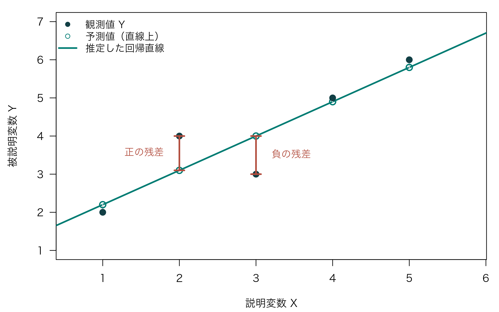
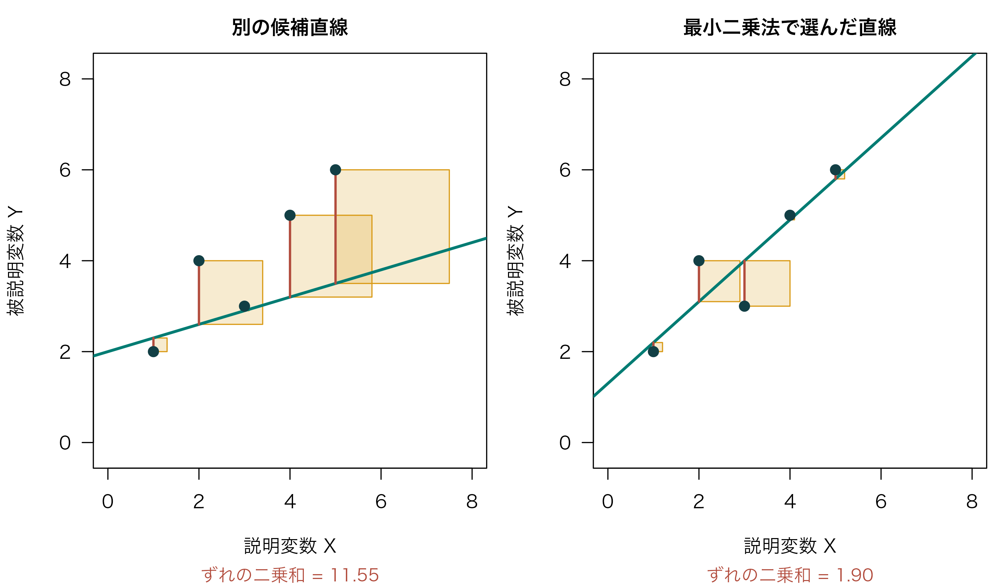
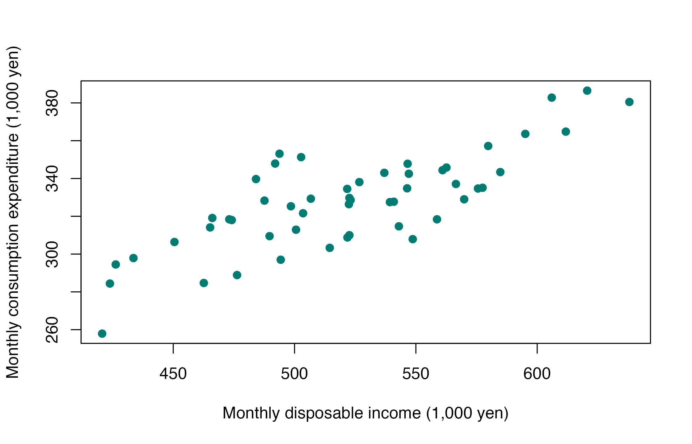
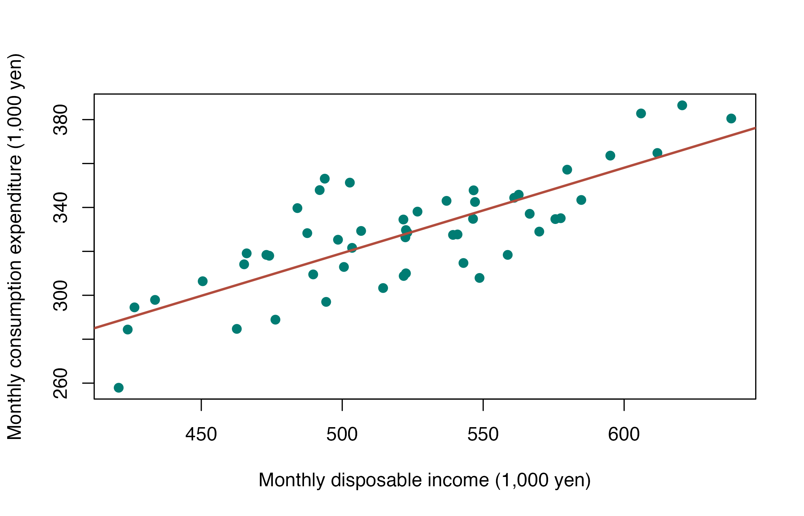

第5回：単回帰分析
到達目標
- 問いの設定から結果の解釈まで、計量経済分析の流れを理解する。
- 単回帰分析の基本を理解し、Rで分析を行って結果を解釈できる。
今回は、理論の要点を確認した後、教科書の消費関数の例に沿って、都市別の可処分所得と消費支出のデータを使って一通りの分析を行う。
Chapter 1｜計量経済分析の流れ
1. 理論的背景の確認（仮説の設定）
計量経済学は、経済理論と現実経済の「架け橋」の役割を担う。理論や仮説、法則性・関係性などが現実経済にどの程度当てはまるかを、データから検証する。
実証分析では、「理論・仮説ありき」というスタンスが重要となる。消費関数を例にとれば、所得と消費支出の関係に注目する。今回は次の仮説を立て、都市別のデータで確かめる。
今回の仮説
可処分所得の高い都市ほど、消費支出も多い。
さらに、所得が1千円高い都市では、消費支出が平均的に何千円多いかを推定する。単にデータがあるから分析するのではなく、何を確かめたいかを先に考えよう。
2. 計量経済分析の標準的な流れ
| ステップ | 内容 | 所得と消費の例 |
|---|---|---|
| 1 | 理論的背景の確認（仮説の設定） | 「可処分所得の高い都市ほど、消費支出も多い」という仮説を考える |
| 2 | 実証モデルの設定 | 「消費 \(= a + b\,所得 + 誤差\)」と定式化する |
| 3 | データの選定 | 被説明変数と説明変数それぞれに当てはまるデータを選ぶ |
| 4 | 予備的分析 | 基本統計量と散布図から、データの特性を把握する |
| 5 | パラメータの推定 | 最小二乗法で係数 \(a,b\) をデータから推定する |
| 6 | 仮説検定 | 所得の係数が0かを両側検定し、有意水準5%で判断する |
| 7 | モデルの当てはまりの確認 | 決定係数 \(R^2\) で、消費支出のばらつきをどの程度説明できるかを確認する |
| 8 | 予測 | 推定結果を使って、消費の予測値を算出する |
今回はこの流れに沿って、Rで単回帰分析を行う。特に、散布図の確認、係数の推定と解釈、仮説検定、決定係数による当てはまりの確認、予測を行う。
3. 今回の分析課題
実習では、2024年の家計調査による52都市の可処分所得と消費支出を用いる。二人以上の世帯のうち勤労者世帯について、都市別の1世帯当たり1か月平均を比較する。観測単位は都市であり、金額の単位はともに千円／月である。
今回の分析課題
- 可処分所得が多い都市ほど、消費支出も多いだろうか。
- 可処分所得が1万円多いと、消費支出は平均的に何円多いか。
- 可処分所得が500千円／月の都市では、消費支出はいくらと予測されるか。
Chapter 2｜単回帰分析の基礎
1. 単回帰モデル
データを用いて変数（事象）間の関係性を計測する手法の一つに、回帰分析がある。消費関数に関する回帰分析では、次のような定式化を行う。
\[ 消費 = a + b\,所得 + 誤差 \]
左辺の消費を被説明変数（従属変数）、右辺の所得を説明変数（独立変数）と呼ぶ。説明変数が所得のみのように、一つの説明変数を用いる分析を単回帰分析という。
一般的には、被説明変数を \(Y\)、説明変数を \(X\)、誤差項を \(u\) として、\(Y = a + bX + u\) と表す。
| 記号 | 意味 | 所得と消費の例 |
|---|---|---|
| \(Y\) | 被説明変数 | 消費支出（実習では千円／月） |
| \(X\) | 説明変数 | 可処分所得（実習では千円／月） |
| \(a\) | 切片（定数項） | 所得がゼロのときの回帰直線上の消費 |
| \(b\) | 傾き | 所得が1単位増加すると、回帰直線上の消費が何単位増加するか |
| \(u\) | 誤差項 | 所得だけでは説明されない部分 |
\(a\) と \(b\) はパラメータ（係数）と呼ばれ、これらをデータから推定することが主たる目的となる。現実のデータには、所得によって説明できる部分だけでなく、その他の要因やノイズも含まれるため、誤差項を加えている。
切片はモデル上の値であり、所得がゼロの世帯が観測されていなければ、実際の消費としてそのまま解釈しない。また、相関関係があることだけで、因果関係があるとはいえない。回帰式を書くだけで、所得が消費の原因であることが証明されるわけではない。
2. 推定値・予測値・残差
係数 \(a,b\) の推定値に「ハット」を付けると、推定された回帰直線は次のように表される。
\[ \hat{Y}_i = \hat{a} + \hat{b}X_i \]
\(\hat{Y}_i\) が予測値（当てはめ値）であり、実際の観測値との差が残差である。添字 \(i\) は、それぞれの都市を表す。
\[ e_i = Y_i - \hat{Y}_i \]
残差は、回帰直線から各観測点までの縦方向の距離に対応する。残差が正なら観測点は回帰直線より上、負なら下に位置する。モデルの誤差項 \(u_i\) と、推定後に計算できる残差 \(e_i\) は区別しよう。
黒い点が観測値、白抜きの点が同じ \(X\) における予測値である。赤い線の長さが残差の絶対値を表す。直線への最短距離ではなく、縦方向に測ることに注意しよう。
3. 最小二乗法
散布図で考えると、パラメータの推定とは、プロットの中心付近に一本の直線を引くことを意味する。回帰直線が縦軸と交わる切片が \(a\)、傾きが \(b\) になる。
最小二乗法（Ordinary Least Squares：OLS）では、各観測点と直線の縦方向のずれを二乗して足し、その合計が最も小さくなる切片と傾きを求める。
\[ \min_{a,b}\sum_{i=1}^{n}\{Y_i-(a+bX_i)\}^2 \]
残差をそのまま足すと正と負が打ち消し合うため、二乗してずれの大きさを評価する。Rのlm()がこの計算を行うので、今回は係数の手計算よりも、モデルの指定と結果の解釈を練習する。

同じ点でも、直線を変えると縦方向のずれと正方形の面積が変わる。右の直線では面積の合計が小さい。重なった部分も、それぞれの正方形の面積として足し合わせる。OLSは、この2本だけを比較するのではなく、切片と傾きを変えて得られるすべての直線の中から、ずれの二乗和が最小になる直線を選ぶ。
4. 回帰係数の仮説検定
推定された傾きが正でも、それだけで母集団でも傾きが正だと断定することはできない。標本によって推定値は変動するため、推定値の大きさと、その不確かさを合わせて判断する。
今回は、所得の係数 \(b\) について次の両側検定を行う。
\[ H_0: b = 0 \qquad H_1: b \ne 0 \]
- 帰無仮説 \(H_0\)：モデル上、所得と消費支出の線形の関係を表す傾きは0である。
- 対立仮説 \(H_1\)：傾きは0ではない。
最初の予想は「正の関係」だが、Rの標準出力に合わせ、ここではまず傾きが0かどうかを両側検定で確認し、推定値の符号も読む。
検定統計量は、推定値が0から標準誤差の何倍離れているかを表す。
\[ t = \frac{\hat{b} - 0}{\mathrm{SE}(\hat{b})} \]
標準誤差 \(\mathrm{SE}(\hat{b})\)は、標本による係数推定値のばらつきの大きさを表す推定値である。通常の単回帰のt検定では、帰無仮説と以下の前提の下で、この統計量は自由度 \(n-2\) のt分布に従う。
p値は、帰無仮説と検定の前提の下で、観測された値以上に絶対値の大きいt統計量が得られる確率である。有意水準を分析前に5%と決めた場合、次のように判断する。
| 判定 | 結論 |
|---|---|
| \(p < 0.05\) | 帰無仮説を棄却する。係数は5%水準で統計的に有意である |
| \(p \geq 0.05\) | 帰無仮説を棄却できない。係数が0だと証明されたわけではない |
p値は「帰無仮説が正しい確率」ではない。また、統計的有意性と、経済的な効果の大きさや因果関係は区別する。
ここで扱う通常のt検定は、説明変数を与えたとき、誤差項が平均0・共通の分散を持つ正規分布に従い、観測間で独立であるという前提に基づく。都市別平均のデータでこれらが自動的に満たされるわけではないため、検定結果はこのモデルと前提に依存するものとして読む。（参考：NIST：回帰モデルの前提と点検）
5. モデルの当てはまり
決定係数 \(R^2\)は、被説明変数の全体のばらつきのうち、回帰直線で説明できる割合を表す。切片を含むOLSでは、次のように書ける。
\[ R^2 = \frac{\text{回帰直線で説明されるばらつき}}{\text{被説明変数の全体のばらつき}} = \frac{\displaystyle\sum_{i=1}^{n}(\hat{Y}_i-\bar{Y})^2} {\displaystyle\sum_{i=1}^{n}(Y_i-\bar{Y})^2} \]
\(\bar{Y}\) は観測値の平均、\(\hat{Y}_i\) は回帰直線上の予測値である。
- 分子：予測値が平均からどれだけ離れているかの二乗和（説明平方和）。
- 分母：観測値が平均からどれだけ離れているかの二乗和（全平方和）。
被説明変数にばらつきがある場合、\(R^2\)は0から1の間になり、1に近いほど標本内の当てはまりがよい。たとえば\(R^2=0.60\)なら、「被説明変数のばらつきの60%を回帰直線が説明している」と読む。
Chapter 3｜Rで一通り分析する
作業の準備
zemi.Rprojを開く。- File → New File → R Scriptから新規スクリプトを作成し、
script/lesson05.Rとして保存する。 - data_lesson05.csv をダウンロードし、Project内の
dataフォルダに保存する。
今回はRの標準機能だけを使う。以下のコードを、スクリプトに上から順に記述して実行する。
zemi/
├── zemi.Rproj
├── data/
│ └── data_lesson05.csv
├── script/
│ └── lesson05.R
└── output/今回は、2024年の家計調査に基づく52都市の所得と消費支出を用いる。対象は二人以上の世帯のうち勤労者世帯で、金額は1世帯当たり1か月間の都市別平均（千円）である。教科書の消費関数の例にならい、「所得が高い都市ほど消費支出も多い」という予想をデータで確かめる。
| 列名 | 内容・単位 | 分析での役割 |
|---|---|---|
city_code |
都市コード | 都市の識別 |
city |
都市名 | 都市の識別 |
income |
可処分所得（千円／月） | 説明変数 \(x\) |
consumption |
消費支出（千円／月） | 被説明変数 \(y\) |
food |
食料支出（千円／月） | 今回は使用しない |
出典：総務省統計局「家計調査」2024年、二人以上の世帯のうち勤労者世帯の都市別集計。授業では可処分所得を所得として扱う。e-Stat：家計調査
今回は1行が1都市を表す横断面データである。個々の世帯の記録ではなく、都市ごとに集計された平均値である点に注意しよう。
1. データの読み込みと確認
分析に使うデータを読み込み、観測数・欠損値・所得と消費支出の値の範囲を確認して、データの構成を把握する。
kakei <- read.csv(
"data/data_lesson05.csv",
fileEncoding = "UTF-8",
colClasses = c(city_code = "character")
)head(kakei) city_code city income consumption food
1 01100 札幌市 489.7 309.5 83.0
2 02201 青森市 476.3 288.9 81.7
3 03201 盛岡市 521.7 334.5 84.8
4 04100 仙台市 547.1 342.5 86.9
5 05201 秋田市 433.6 297.9 83.0
6 06201 山形市 566.5 337.1 95.6nrow(kakei)[1] 52colSums(is.na(kakei[c("income", "consumption")])) income consumption
0 0 range(kakei$income)[1] 420.7 638.0summary(kakei[c("income", "consumption")]) income consumption
Min. :420.7 Min. :257.9
1st Qu.:489.2 1st Qu.:312.2
Median :522.5 Median :328.4
Mean :522.3 Mean :327.9
3rd Qu.:559.3 3rd Qu.:343.1
Max. :638.0 Max. :386.5 観測数は52都市で、所得と消費支出に欠損値はない。所得の観測範囲は420.7〜638.0千円である。city_codeは文字列として読み込み、計算に使う所得と消費支出について最小値・平均値・最大値などの基本統計量を確認する。第4回で使った学生データとは別のファイルであることを確認しよう。
2. 予備的分析：散布図と相関係数
回帰モデルを推定する前に、散布図で所得と消費支出の関係の形状や他から大きく離れた点がないかを確認し、相関係数で線形の関係の方向と強さを数値で捉える。
横軸に説明変数の所得、縦軸に被説明変数の消費支出を置く。
plot(
x = kakei$income,
y = kakei$consumption,
xlab = "Monthly disposable income (1,000 yen)",
ylab = "Monthly consumption expenditure (1,000 yen)",
pch = 19,
col = "#007c73"
)
散布図でプロットが右上がりに描かれている場合、横軸の値が大きいと縦軸の値も大きいことを示す。今回の図では、所得と消費支出には正の相関が見られる。ただし、同程度の所得でも消費支出にはばらつきがある。
続いて、cor()で所得と消費支出の相関係数（ピアソンの積率相関係数）を求める。
cor(kakei$income, kakei$consumption)[1] 0.7886642相関係数は\(-1\)から\(1\)の値を取り、正なら右上がり、負なら右下がりの線形の関係を表す。絶対値が1に近いほど線形の関係が強く、0に近いほど弱い。ただし、相関係数が0に近くても、曲線的な関係がある場合はある。
今回は約0.789であり、所得の高い都市ほど消費支出も多いという、散布図で見た正の関係と整合的である。この値は関係の方向と強さを表すもので、「所得が1千円違うと消費支出が何千円違うか」を表す回帰直線の傾きとは異なる。
3. パラメータの推定
所得の違いと消費支出の違いの関係を数値で捉えるため、最小二乗法で回帰直線の切片と傾きを推定する。
model <- lm(consumption ~ income, data = kakei)
coef(model)(Intercept) income
124.8298680 0.3887462 被説明変数 ~ 説明変数の順にモデルを指定する。data = kakeiは使用するデータ、coef()は推定した係数を取り出す関数である。切片は通常、自動的に含まれる。
推定した回帰式は、係数を丸めて書くと次のようになる。
\[ \widehat{\text{消費支出}} = 124.830 + 0.389 \times \text{所得} \]
- 傾き約0.389：所得の都市平均が1千円高いと、回帰直線上の消費支出は約0.389千円多い。
- 切片約124.830：所得0千円まで直線を延長した場合の値である。0千円は観測範囲外なので、実際の無所得世帯の消費支出と断定しない。
この係数は都市平均どうしの関係を表し、同じ世帯の所得が増えたときの変化を直接表すものではない。
続いて、散布図に回帰直線を重ねる。
plot(
x = kakei$income,
y = kakei$consumption,
xlab = "Monthly disposable income (1,000 yen)",
ylab = "Monthly consumption expenditure (1,000 yen)",
pch = 19,
col = "#007c73"
)
abline(model, col = "#b24c3d", lwd = 2)
直線が関係の大まかな方向を表していても、個々の観測値とはずれがあることを確認する。
4. 仮説検定
推定された正の傾きが、標本による推定値のばらつきを考慮しても0と区別できるかを、仮説検定で確認する。
summary(model)
Call:
lm(formula = consumption ~ income, data = kakei)
Residuals:
Min 1Q Median 3Q Max
-30.475 -10.050 1.923 8.448 36.307
Coefficients:
Estimate Std. Error t value Pr(>|t|)
(Intercept) 124.82987 22.49130 5.55 1.09e-06 ***
income 0.38875 0.04286 9.07 3.85e-12 ***
---
Signif. codes: 0 '***' 0.001 '**' 0.01 '*' 0.05 '.' 0.1 ' ' 1
Residual standard error: 15.82 on 50 degrees of freedom
Multiple R-squared: 0.622, Adjusted R-squared: 0.6144
F-statistic: 82.27 on 1 and 50 DF, p-value: 3.855e-12理論で確認した \(H_0: b=0\)、\(H_1: b\ne0\) の両側検定を行う。有意水準は5%とする。summary(model)のCoefficients表で、incomeの行を読む。(Intercept)の行は切片の検定である。
| Rの出力 | 意味 | 今回の値（概数） |
|---|---|---|
Estimate |
所得の係数の推定値 \(\hat{b}\) | 0.38875 |
Std. Error |
係数の標準誤差 \(\mathrm{SE}(\hat{b})\) | 0.04286 |
t value |
\(\hat{b}/\mathrm{SE}(\hat{b})\) | 9.070 |
Pr(>\|t\|) |
\(H_0:b=0\) に対する両側検定のp値 | \(3.85\times10^{-12}\) |
Rの公式ドキュメント（summary.lm）でも、この4列は係数の推定値、標準誤差、t値、両側p値に対応している。
52都市から切片と傾きの2つを推定しているので、自由度は \(52-2=50\) となる。p値のe-12は \(10^{-12}\) を表し、p値は0ではなく、非常に小さい正の値である。
判定： \(p\approx3.85\times10^{-12}<0.05\) なので、帰無仮説「所得の係数は0」を棄却する。係数の推定値は正であり、このモデルと検定の前提の下では、所得と消費支出の間に統計的に有意な正の線形の関連が認められる。
この結論は、所得を増やしたときの因果効果を証明するものではない。また、5%水準で有意であることは「帰無仮説が正しい確率が5%未満」という意味ではない。
5. モデルの当てはまり
回帰直線が消費支出のばらつきをどの程度説明しているかを、決定係数 \(R^2\)で確認する。
summary(model)の出力では、Multiple R-squaredが \(R^2\) に当たる。値だけを取り出すには、次のように書く。
summary(model)$r.squared[1] 0.6219913今回の \(R^2\) は約0.622である。これは、52都市の消費支出のばらつきの約62.2%を、この回帰直線が説明していることを表す。
「62.2%の都市について正しく予測できた」という意味ではない。また、当てはまりがよくても、因果関係が示されたわけではない。
6. 予測
推定した回帰式を使い、可処分所得が500千円／月の都市の消費支出を予測する。
predict()に予測したい所得の値を渡して、回帰直線上の消費支出を求める。
predict(model, newdata = data.frame(income = 500)) 1
319.203 予測値は約319.20千円（約31万9,203円）である。newdataには、モデルで使った説明変数と同じ列名のデータフレームを渡す。predict()は丸める前の係数で計算する。
これは都市平均どうしの関係を表す回帰直線上の値であり、所得500千円の個々の世帯が同額を支出するという意味ではない。観測された説明変数の範囲内での予測を内挿、範囲外への予測を外挿といい、外挿では特に注意が必要である。
最後にscript/lesson05.Rを保存する。
結果を解釈するときの注意
教科書が強調するように、データだけで関係性を探るのではなく、理論的な背景を踏まえて結果を読むことが重要である。
- 相関関係と因果関係を区別する。 世帯の人数・年齢構成や地域の物価など、所得と消費の両方に関係する要因を考える必要がある。
- どのデータの結果かを示す。 今回の値は勤労者世帯の都市別平均であり、日本のすべての世帯や、個別の世帯の関係をそのまま表すものではない。
- 観測範囲を確認する。 可処分所得が420.7〜638.0千円の範囲を大きく外れた予測では、同じ直線関係が続くとは限らない。